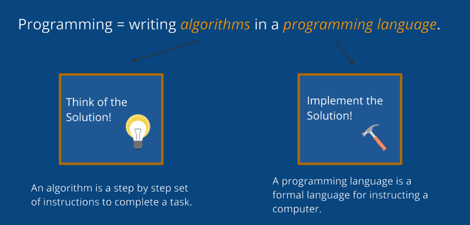

Hello World
Video LessonThe classic "Hello World" program: an introduction to JavaScript.
What is JavaScript? | JS How To | <script> | alert() | Comments
What is JavaScript?
JavaScript is a programming language.

Programming involves using a programming language to instruct a computer to complete a task.
JavaScript is a programming language that may be used to build web applications.
JavaScript How To
The recommended way to run JavaScript code is to load an external JavaScript file into your html
document using a <script> element.
Step 1: Create an External JavaScript File
Create an external JavaScript file by making a file with a .js extension (It is common to name this file "script.js" or "main.js") This document is where you will write your JavaScript code.
The first javaScript command we will use is the alert() function. The alert() function instructs the browser to display a provided message in an alert-box.
script.js
alert("Hello World!");
alert("Welcome to JavaScript.");
Step 2: Run JavaScript in HTML document
Put a <script> element as the last element in the html body. This will run
the JavaScript code specificed in the script's src attribute.
index.html
<body>
<h1>JavaScript Intro</h1>
<!-- Run External JavaScript File -->
<script src="script.js"></script>
</body>
JS Comments
Comments are ignored when a script is run.
Single-line comments start with two forward slash characters (//).
A comment may be a full line or follow a statement.
// A full line comment
alert("Hello");
alert("World"); // A comment after a statement
// The alert below is ignored because it is commented
// alert("I am being ignored.");
In most editors, a line of code can be commented by pressing Ctrl + /. Comment
multiple lines of code by selecting the code and then pressing Ctrl + /.
Why Comments?
Comments are often used to:
- highlight the overall architecture of your code (titles, headings, ...)
- describe important solutions that aren't obvious
- temporarily disable a part of the code
Comments will help others understand your code and will help you maintain your code when you come back to it later.
Summary
- fdsafdsa
- fdsafdsa